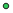

<!doctype html>
<html lang="en">
    <head>
        <meta charset="utf-8">
        <meta http-equiv="X-UA-Compatible" content="IE=edge">
        <meta name="viewport" content="initial-scale=1,user-scalable=no,maximum-scale=1,width=device-width">
        <meta name="mobile-web-app-capable" content="yes">
        <meta name="apple-mobile-web-app-capable" content="yes">
        <link rel="stylesheet" href="css/leaflet.css">
        <link rel="stylesheet" href="css/L.Control.Layers.Tree.css">
        <link rel="stylesheet" href="css/qgis2web.css">
        <link rel="stylesheet" href="css/fontawesome-all.min.css">
        <link rel="stylesheet" href="css/MarkerCluster.css">
        <link rel="stylesheet" href="css/MarkerCluster.Default.css">
        <link rel="stylesheet" href="css/leaflet-search.css">
        <link rel="stylesheet" href="css/leaflet-measure.css">
        <style>
        html, body, #map {
            width: 100%;
            height: 100%;
            padding: 0;
            margin: 0;
        }
        </style>
        <title></title>
    </head>
    <body>
        <div id="map">
        </div>
        <script src="js/qgis2web_expressions.js"></script>
        <script src="js/leaflet.js"></script>
        <script src="js/L.Control.Layers.Tree.min.js"></script>
        <script src="js/leaflet.rotatedMarker.js"></script>
        <script src="js/leaflet.pattern.js"></script>
        <script src="js/leaflet-hash.js"></script>
        <script src="js/Autolinker.min.js"></script>
        <script src="js/rbush.min.js"></script>
        <script src="js/labelgun.min.js"></script>
        <script src="js/labels.js"></script>
        <script src="js/leaflet-measure.js"></script>
        <script src="js/leaflet.markercluster.js"></script>
        <script src="js/leaflet-search.js"></script>
        <script src="data/sampledpointsextent_1.js"></script>
        <script>
        var map = L.map('map', {
            zoomControl:false, maxZoom:28, minZoom:1
        })
        var hash = new L.Hash(map);
        map.attributionControl.setPrefix('<a href="https://github.com/tomchadwin/qgis2web" target="_blank">qgis2web</a> &middot; <a href="https://leafletjs.com" title="A JS library for interactive maps">Leaflet</a> &middot; <a href="https://qgis.org">QGIS</a>');
        var autolinker = new Autolinker({truncate: {length: 30, location: 'smart'}});
        // remove popup's row if "visible-with-data"
        function removeEmptyRowsFromPopupContent(content, feature) {
         var tempDiv = document.createElement('div');
         tempDiv.innerHTML = content;
         var rows = tempDiv.querySelectorAll('tr');
         for (var i = 0; i < rows.length; i++) {
             var td = rows[i].querySelector('td.visible-with-data');
             var key = td ? td.id : '';
             if (td && td.classList.contains('visible-with-data') && feature.properties[key] == null) {
                 rows[i].parentNode.removeChild(rows[i]);
             }
         }
         return tempDiv.innerHTML;
        }
        // add class to format popup if it contains media
		function addClassToPopupIfMedia(content, popup) {
			var tempDiv = document.createElement('div');
			tempDiv.innerHTML = content;
			if (tempDiv.querySelector('td img')) {
				popup._contentNode.classList.add('media');
					// Delay to force the redraw
					setTimeout(function() {
						popup.update();
					}, 10);
			} else {
				popup._contentNode.classList.remove('media');
			}
		}
        var zoomControl = L.control.zoom({
            position: 'topleft'
        }).addTo(map);
        var measureControl = new L.Control.Measure({
            position: 'topleft',
            primaryLengthUnit: 'meters',
            secondaryLengthUnit: 'kilometers',
            primaryAreaUnit: 'sqmeters',
            secondaryAreaUnit: 'hectares'
        });
        measureControl.addTo(map);
        document.getElementsByClassName('leaflet-control-measure-toggle')[0].innerHTML = '';
        document.getElementsByClassName('leaflet-control-measure-toggle')[0].className += ' fas fa-ruler';
        var bounds_group = new L.featureGroup([]);
        function setBounds() {
            if (bounds_group.getLayers().length) {
                map.fitBounds(bounds_group.getBounds());
            }
        }
        map.createPane('pane_GoogleHybrid_0');
        map.getPane('pane_GoogleHybrid_0').style.zIndex = 400;
        var layer_GoogleHybrid_0 = L.tileLayer('https://mt1.google.com/vt/lyrs=y&x={x}&y={y}&z={z}', {
            pane: 'pane_GoogleHybrid_0',
            opacity: 1.0,
            attribution: '<a href="https://www.google.at/permissions/geoguidelines/attr-guide.html">Map data ©2015 Google</a>',
            minZoom: 1,
            maxZoom: 28,
            minNativeZoom: 0,
            maxNativeZoom: 20
        });
        layer_GoogleHybrid_0;
        map.addLayer(layer_GoogleHybrid_0);
        function pop_sampledpointsextent_1(feature, layer) {
            var popupContent = '<table>\
                    <tr>\
                        <th scope="row">Date</th>\
                        <td class="visible-with-data" id="Date">' + (feature.properties['Date'] !== null ? autolinker.link(feature.properties['Date'].toLocaleString()) : '') + '</td>\
                    </tr>\
                    <tr>\
                        <th scope="row">Stretch</th>\
                        <td class="visible-with-data" id="Stretch">' + (feature.properties['Stretch'] !== null ? autolinker.link(feature.properties['Stretch'].toLocaleString()) : '') + '</td>\
                    </tr>\
                    <tr>\
                        <th scope="row">Location</th>\
                        <td class="visible-with-data" id="Location">' + (feature.properties['Location'] !== null ? autolinker.link(feature.properties['Location'].toLocaleString()) : '') + '</td>\
                    </tr>\
                    <tr>\
                        <th scope="row">Depth</th>\
                        <td class="visible-with-data" id="Depth">' + (feature.properties['Depth'] !== null ? autolinker.link(feature.properties['Depth'].toLocaleString()) : '') + '</td>\
                    </tr>\
                    <tr>\
                        <th scope="row">Temprture</th>\
                        <td class="visible-with-data" id="Temprture">' + (feature.properties['Temprture'] !== null ? autolinker.link(feature.properties['Temprture'].toLocaleString()) : '') + '</td>\
                    </tr>\
                    <tr>\
                        <th scope="row">Quadrant</th>\
                        <td class="visible-with-data" id="Quadrant">' + (feature.properties['Quadrant'] !== null ? autolinker.link(feature.properties['Quadrant'].toLocaleString()) : '') + '</td>\
                    </tr>\
                    <tr>\
                        <th scope="row">Lat</th>\
                        <td class="visible-with-data" id="Lat">' + (feature.properties['Lat'] !== null ? autolinker.link(feature.properties['Lat'].toLocaleString()) : '') + '</td>\
                    </tr>\
                    <tr>\
                        <th scope="row">Lon</th>\
                        <td class="visible-with-data" id="Lon">' + (feature.properties['Lon'] !== null ? autolinker.link(feature.properties['Lon'].toLocaleString()) : '') + '</td>\
                    </tr>\
                    <tr>\
                        <th scope="row">Live Coral</th>\
                        <td class="visible-with-data" id="Live Coral">' + (feature.properties['Live Coral'] !== null ? autolinker.link(feature.properties['Live Coral'].toLocaleString()) : '') + '</td>\
                    </tr>\
                    <tr>\
                        <th scope="row">Dead Coral</th>\
                        <td class="visible-with-data" id="Dead Coral">' + (feature.properties['Dead Coral'] !== null ? autolinker.link(feature.properties['Dead Coral'].toLocaleString()) : '') + '</td>\
                    </tr>\
                    <tr>\
                        <th scope="row">Bleached C</th>\
                        <td class="visible-with-data" id="Bleached C">' + (feature.properties['Bleached C'] !== null ? autolinker.link(feature.properties['Bleached C'].toLocaleString()) : '') + '</td>\
                    </tr>\
                    <tr>\
                        <th scope="row">Seagrass %</th>\
                        <td class="visible-with-data" id="Seagrass %">' + (feature.properties['Seagrass %'] !== null ? autolinker.link(feature.properties['Seagrass %'].toLocaleString()) : '') + '</td>\
                    </tr>\
                    <tr>\
                        <th scope="row">Rubble %</th>\
                        <td class="visible-with-data" id="Rubble %">' + (feature.properties['Rubble %'] !== null ? autolinker.link(feature.properties['Rubble %'].toLocaleString()) : '') + '</td>\
                    </tr>\
                    <tr>\
                        <th scope="row">Macro-alga</th>\
                        <td class="visible-with-data" id="Macro-alga">' + (feature.properties['Macro-alga'] !== null ? autolinker.link(feature.properties['Macro-alga'].toLocaleString()) : '') + '</td>\
                    </tr>\
                    <tr>\
                        <th scope="row">Sand</th>\
                        <td class="visible-with-data" id="Sand">' + (feature.properties['Sand'] !== null ? autolinker.link(feature.properties['Sand'].toLocaleString()) : '') + '</td>\
                    </tr>\
                    <tr>\
                        <th scope="row">Notes</th>\
                        <td class="visible-with-data" id="Notes">' + (feature.properties['Notes'] !== null ? autolinker.link(feature.properties['Notes'].toLocaleString()) : '') + '</td>\
                    </tr>\
                </table>';
            var content = removeEmptyRowsFromPopupContent(popupContent, feature);
			layer.on('popupopen', function(e) {
				addClassToPopupIfMedia(content, e.popup);
			});
			layer.bindPopup(content, { maxHeight: 400 });
        }

        function style_sampledpointsextent_1_0(feature) {
            switch(String(feature.properties['Stretch'])) {
                case 'Bofa/Takaungu':
                    return {
                pane: 'pane_sampledpointsextent_1',
                radius: 4.0,
                opacity: 1,
                color: 'rgba(35,35,35,1.0)',
                dashArray: '',
                lineCap: 'butt',
                lineJoin: 'miter',
                weight: 1,
                fill: true,
                fillOpacity: 1,
                fillColor: 'rgba(46,202,90,1.0)',
                interactive: true,
            }
                    break;
                case 'Jumba Ruins/Kanamai':
                    return {
                pane: 'pane_sampledpointsextent_1',
                radius: 4.0,
                opacity: 1,
                color: 'rgba(35,35,35,1.0)',
                dashArray: '',
                lineCap: 'butt',
                lineJoin: 'miter',
                weight: 1,
                fill: true,
                fillOpacity: 1,
                fillColor: 'rgba(135,56,204,1.0)',
                interactive: true,
            }
                    break;
                case 'Kanamai/Kuruwitu':
                    return {
                pane: 'pane_sampledpointsextent_1',
                radius: 4.0,
                opacity: 1,
                color: 'rgba(35,35,35,1.0)',
                dashArray: '',
                lineCap: 'butt',
                lineJoin: 'miter',
                weight: 1,
                fill: true,
                fillOpacity: 1,
                fillColor: 'rgba(75,106,220,1.0)',
                interactive: true,
            }
                    break;
                case 'Malindi':
                    return {
                pane: 'pane_sampledpointsextent_1',
                radius: 4.0,
                opacity: 1,
                color: 'rgba(35,35,35,1.0)',
                dashArray: '',
                lineCap: 'butt',
                lineJoin: 'miter',
                weight: 1,
                fill: true,
                fillOpacity: 1,
                fillColor: 'rgba(213,107,101,1.0)',
                interactive: true,
            }
                    break;
                case 'Marereni':
                    return {
                pane: 'pane_sampledpointsextent_1',
                radius: 4.0,
                opacity: 1,
                color: 'rgba(35,35,35,1.0)',
                dashArray: '',
                lineCap: 'butt',
                lineJoin: 'miter',
                weight: 1,
                fill: true,
                fillOpacity: 1,
                fillColor: 'rgba(100,216,220,1.0)',
                interactive: true,
            }
                    break;
                case 'Ngomeni':
                    return {
                pane: 'pane_sampledpointsextent_1',
                radius: 4.0,
                opacity: 1,
                color: 'rgba(35,35,35,1.0)',
                dashArray: '',
                lineCap: 'butt',
                lineJoin: 'miter',
                weight: 1,
                fill: true,
                fillOpacity: 1,
                fillColor: 'rgba(229,205,110,1.0)',
                interactive: true,
            }
                    break;
                case 'Wesa/Roka':
                    return {
                pane: 'pane_sampledpointsextent_1',
                radius: 4.0,
                opacity: 1,
                color: 'rgba(35,35,35,1.0)',
                dashArray: '',
                lineCap: 'butt',
                lineJoin: 'miter',
                weight: 1,
                fill: true,
                fillOpacity: 1,
                fillColor: 'rgba(135,200,82,1.0)',
                interactive: true,
            }
                    break;
                default:
                    return {
                pane: 'pane_sampledpointsextent_1',
                radius: 4.0,
                opacity: 1,
                color: 'rgba(35,35,35,1.0)',
                dashArray: '',
                lineCap: 'butt',
                lineJoin: 'miter',
                weight: 1,
                fill: true,
                fillOpacity: 1,
                fillColor: 'rgba(228,19,169,1.0)',
                interactive: true,
            }
                    break;
            }
        }
        map.createPane('pane_sampledpointsextent_1');
        map.getPane('pane_sampledpointsextent_1').style.zIndex = 401;
        map.getPane('pane_sampledpointsextent_1').style['mix-blend-mode'] = 'normal';
        var layer_sampledpointsextent_1 = new L.geoJson(json_sampledpointsextent_1, {
            attribution: '',
            interactive: true,
            dataVar: 'json_sampledpointsextent_1',
            layerName: 'layer_sampledpointsextent_1',
            pane: 'pane_sampledpointsextent_1',
            onEachFeature: pop_sampledpointsextent_1,
            pointToLayer: function (feature, latlng) {
                var context = {
                    feature: feature,
                    variables: {}
                };
                return L.circleMarker(latlng, style_sampledpointsextent_1_0(feature));
            },
        });
        var cluster_sampledpointsextent_1 = new L.MarkerClusterGroup({showCoverageOnHover: false,
            spiderfyDistanceMultiplier: 2});
        cluster_sampledpointsextent_1.addLayer(layer_sampledpointsextent_1);

        bounds_group.addLayer(layer_sampledpointsextent_1);
        cluster_sampledpointsextent_1.addTo(map);
        var overlaysTree = [
            {label: 'sampledpointsextent<br /><table><tr><td style="text-align: center;"></td><td>Bofa/Takaungu</td></tr><tr><td style="text-align: center;"></td><td>Jumba Ruins/Kanamai</td></tr><tr><td style="text-align: center;"></td><td>Kanamai/Kuruwitu</td></tr><tr><td style="text-align: center;"></td><td>Malindi</td></tr><tr><td style="text-align: center;"></td><td>Marereni</td></tr><tr><td style="text-align: center;"></td><td>Ngomeni</td></tr><tr><td style="text-align: center;"></td><td>Wesa/Roka</td></tr><tr><td style="text-align: center;"></td><td></td></tr></table>', layer: cluster_sampledpointsextent_1},
            {label: "Google Hybrid", layer: layer_GoogleHybrid_0},]
        var lay = L.control.layers.tree(null, overlaysTree,{
            //namedToggle: true,
            //selectorBack: false,
            //closedSymbol: '&#8862; &#x1f5c0;',
            //openedSymbol: '&#8863; &#x1f5c1;',
            //collapseAll: 'Collapse all',
            //expandAll: 'Expand all',
            collapsed: false, 
        });
        lay.addTo(map);
		document.addEventListener("DOMContentLoaded", function() {
            // set new Layers List height which considers toggle icon
            function newLayersListHeight() {
                var layerScrollbarElement = document.querySelector('.leaflet-control-layers-scrollbar');
                if (layerScrollbarElement) {
                    var layersListElement = document.querySelector('.leaflet-control-layers-list');
                    var originalHeight = layersListElement.style.height 
                        || window.getComputedStyle(layersListElement).height;
                    var newHeight = parseFloat(originalHeight) - 50;
                    layersListElement.style.height = newHeight + 'px';
                }
            }
            var isLayersListExpanded = true;
            var controlLayersElement = document.querySelector('.leaflet-control-layers');
            var toggleLayerControl = document.querySelector('.leaflet-control-layers-toggle');
            // toggle Collapsed/Expanded and apply new Layers List height
            toggleLayerControl.addEventListener('click', function() {
                if (isLayersListExpanded) {
                    controlLayersElement.classList.remove('leaflet-control-layers-expanded');
                } else {
                    controlLayersElement.classList.add('leaflet-control-layers-expanded');
                }
                isLayersListExpanded = !isLayersListExpanded;
                newLayersListHeight()
            });	
			// apply new Layers List height if toggle layerstree
			if (controlLayersElement) {
				controlLayersElement.addEventListener('click', function(event) {
					var toggleLayerHeaderPointer = event.target.closest('.leaflet-layerstree-header-pointer span');
					if (toggleLayerHeaderPointer) {
						newLayersListHeight();
					}
				});
			}
            // Collapsed/Expanded at Start to apply new height
            setTimeout(function() {
                toggleLayerControl.click();
            }, 10);
            setTimeout(function() {
                toggleLayerControl.click();
            }, 10);
            // Collapsed touch/small screen
            var isSmallScreen = window.innerWidth < 650;
            if (isSmallScreen) {
                setTimeout(function() {
                    controlLayersElement.classList.remove('leaflet-control-layers-expanded');
                    isLayersListExpanded = !isLayersListExpanded;
                }, 500);
            }  
        });       
        setBounds();
        map.addControl(new L.Control.Search({
            layer: cluster_sampledpointsextent_0,
            initial: false,
            hideMarkerOnCollapse: true,
            propertyName: 'Location'}));
        document.getElementsByClassName('search-button')[0].className +=
         ' fa fa-binoculars';
        </script>
    </body>
</html>
